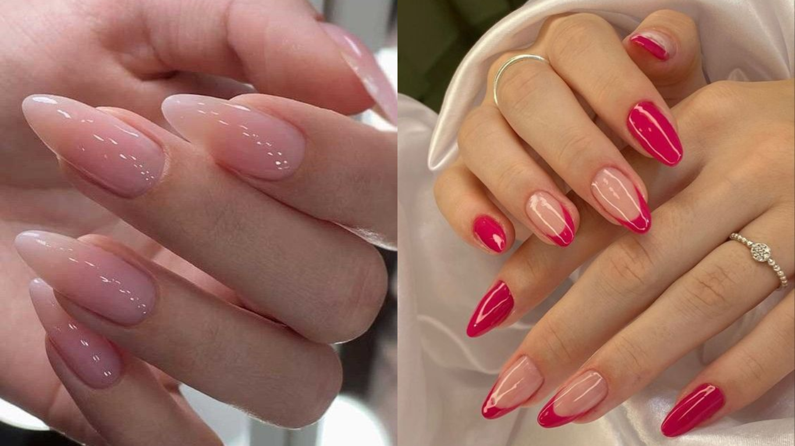
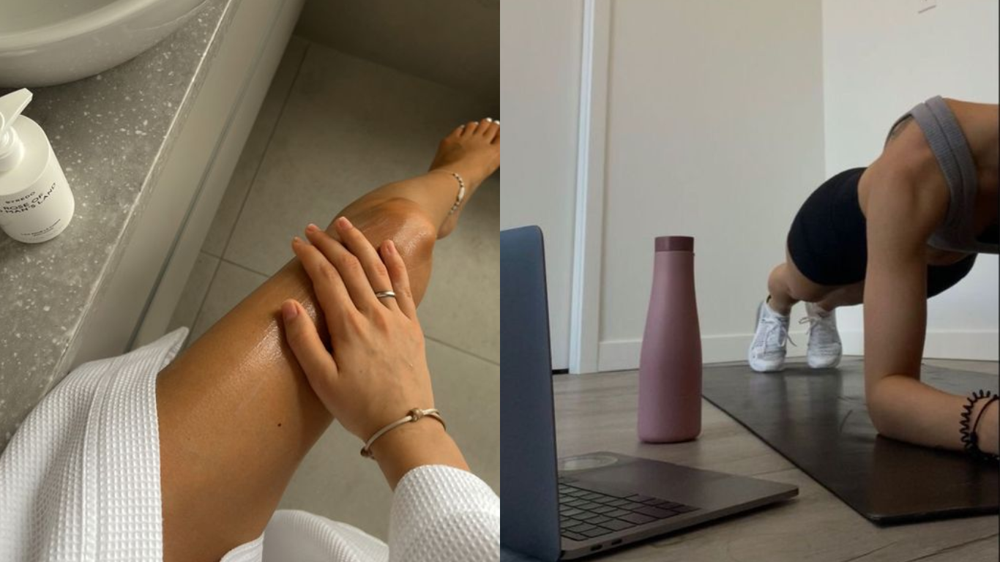

O que é Autocuidado?
O autocuidado é um conceito amplo que engloba práticas e comportamentos adotados por uma pessoa para
promover seu próprio bem-estar, saúde e equilíbrio, tanto físico quanto mental. Envolve a conscientização
e ações deliberadas voltadas para atender às necessidades pessoais, visando prevenir doenças, reduzir o
estresse e melhorar a qualidade de vida. Abrange uma variedade de atividades, desde as mais simples e cotidianas até aquelas mais
específicas, que podem variar de acordo com as preferências e necessidades individuais.
Algumas práticas de autocuidado incluem: cuidados com o corpo, saúde mental, autoconhecimento, lazer e
recreação, relacionamentos saudáveis e gestão do estresse.
O autocuidado é uma prática contínua e individualizada, adaptada às necessidades específicas de cada pessoa. É
uma maneira de garantir que a atenção devida seja dada a si mesmo, promovendo um equilíbrio holístico entre o corpo, a mente
e as emoções.
É importante reconhecer que o autocuidado não é egoísmo, mas sim um investimento valioso na própria saúde e
qualidade de vida.



Descubra o Poder do Autocuidado: Um Convite às Meninas para Cuidarem de Si Mesmas
Queridas meninas, hoje, queremos compartilhar com vocês um convite especial para explorar o maravilhoso mundo do autocuidado.
Em meio às agitações da vida cotidiana, é fácil esquecer de dedicar um tempo para si mesma. No entanto, cuidar
de si mesma não é apenas um luxo, mas uma necessidade vital. O autocuidado não é egoísmo; é um investimento
valioso no seu bem-estar físico, mental e emocional.
1. Reconhecimento da Própria Importância:
Cada uma de vocês é única, especial e digna de amor, atenção e cuidado. Ao praticar o autocuidado, vocês estão
reconhecendo a própria importância, cultivando a autoestima e fortalecendo a relação consigo mesmas.
2. Tempo para Recarregar Energias:
A vida pode ser agitada, repleta de compromissos e responsabilidades. No entanto, é essencial reservar um tempo
para recarregar as energias. O autocuidado oferece um momento para relaxar, rejuvenescer e enfrentar os desafios
com uma mente mais clara e resiliente.
3. Desenvolvimento de Hábitos Saudáveis:
Ao incorporar o autocuidado na rotina diária, vocês estão construindo hábitos saudáveis que terão um impacto
positivo a longo prazo. Esses pequenos gestos diários, como uma boa noite de sono, alimentação balanceada e
prática de exercícios, contribuem para um estilo de vida mais saudável.
4. Fortalecimento da Resiliência Emocional:
O autocuidado não se limita apenas ao corpo físico; ele também é crucial para o bem-estar emocional. Tire um
tempo para se conectar consigo mesma, seja através da meditação, leitura de um livro inspirador ou simplesmente
fazendo algo que traga alegria ao coração. Isso fortalecerá sua resiliência emocional diante dos desafios da vida.
5. Empoderamento e Autoconhecimento:
Ao se envolver no autocuidado, vocês estão assumindo o controle de suas vidas e se empoderando. Conhecer-se
profundamente, compreender suas necessidades e honrar seus limites são passos fundamentais para cultivar um relacionamento
saudável consigo mesma.
6. Inspiração para Outras Meninas:
Ao praticarem o autocuidado, vocês se tornam fontes de inspiração para outras meninas ao redor. Mostrem que é
possível ser forte, gentil consigo mesma e buscar o equilíbrio em um mundo que muitas vezes exige demais.
Queridas meninas, o autocuidado não é um luxo reservado a alguns, mas um presente que cada uma de vocês merece.
Portanto, dediquem um tempo a si mesmas, explorem o que traz alegria e bem-estar, e lembrem-se de que cuidar de si mesma é o
primeiro passo para conquistar o mundo.
Um guia de autocuidado, 2023.